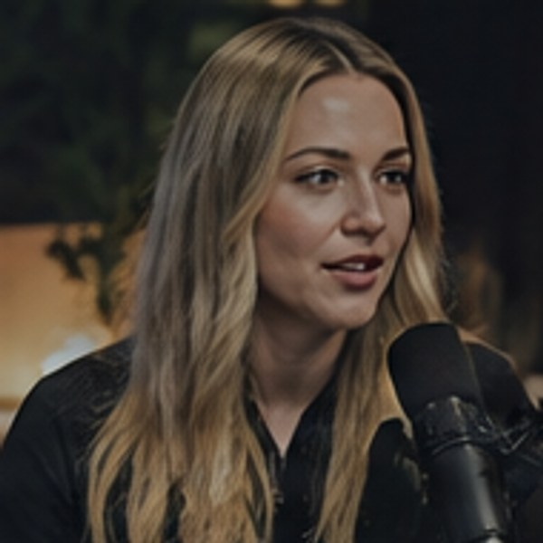

Same moment, two clips
The human pass that keeps AI clips
from looking mass-produced

0:00
so yeah, anyway, I think the thing is that
Unedited AI pick
✕
Starts mid-sentence
✕
No hook, same caption style as every clip
✕
Title: "Episode 47 highlight"
✕
Third clip this week on the same point
0:09
The one question I ask
every
guest
and that is when the
real story
starts
After a human pass
✓
Opens on the strongest line, at 0:09
✓
A hook written for this clip
✓
Title names the idea
✓
Kept only if it makes a new point
Illustration. The guest image is AI-generated for this article.
SLK Media Agency